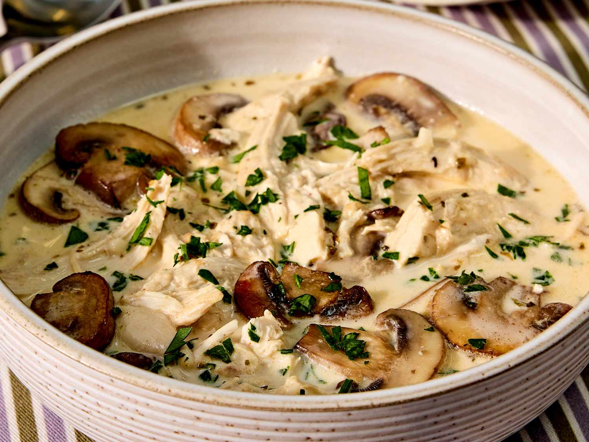

Rotisserie Chicken Mushroom Soup

Description
This Chicken mushroom soup tastes like it simmered for hours, but is easy enough for weeknights thanks to a brilliant shortcut. Creamy, cozy, and packed with flavor, it's a restaurant-worthy meal at home.
If you prefer a soup that is more brothy than creamy, add another cup of bone broth. Serve it with crusty bread or a light salad.
Recipe Information
- Prep Time:
15 mins
- Cook Time:
15 mins
- Total Time:
30 mins
- Servings:
4 to 6
Ingredients
- 2 tablespoons butter
- 8 ounces cremini mushrooms, sliced
- 3 garlic cloves, minced
- 3 cups chicken bone broth, or more as needed
- 1 teaspoon cantanzaro herbs
- 1 teaspoon paprika
- 1 teaspoon garlic powder
- 1 cup heavy cream
- 1 cup shredded mozzarella cheese
- 1/2 cup grated Parmesan cheese
- 3 cups cubed or shredded rotisserie chicken
- chopped fresh parsley
Steps
- In a large pot, melt butter over medium heat. Add sliced mushrooms and cook until browned and softened, 5 to 7 minutes. Add minced garlic and cook for 30 seconds.
- Pour in 3 cups chicken bone broth. Stir in Italian seasoning, paprika, and garlic powder. Bring to a gentle simmer and let cook for 5–10 minutes.
- Reduce heat to low. Stir in heavy cream. Gradually add mozzarella and Parmesan cheese, stirring constantly until melted and smooth.
- Gently stir in rotisserie chicken and simmer for about 5 minutes, just until heated through. Season with salt and pepper. Top with fresh parsley and serve warm.
Home